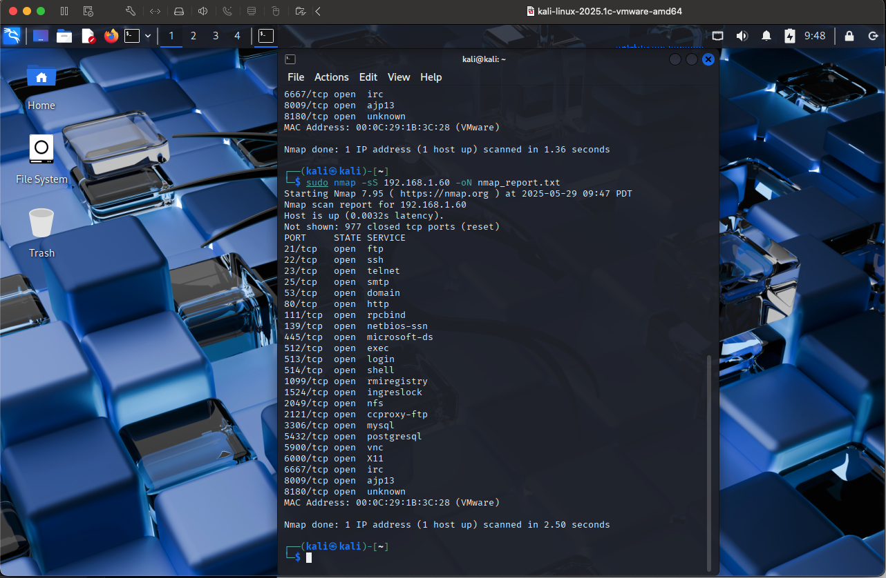
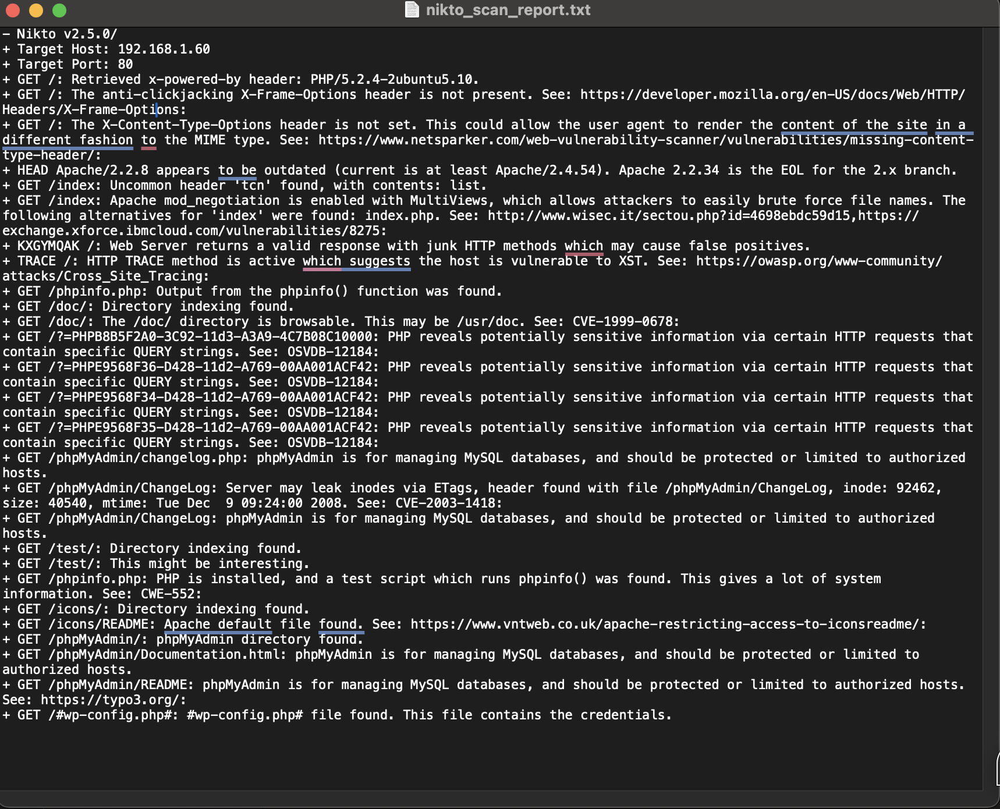

Reconnaissance and Vulnerability Assessment
Objective of the Project
Perform a targeted reconnaissance and vulnerability assessment using
two essential tools available by default in Kali Linux.. The goal is to:
- Use Nmap or Zenmap to identify:
- Open ports.
- Running services
- Potential vulnerabilities.
- Use Nikto to conduct comprehensive digital asset vulnerability Scan identifying
- Misconfigurations.
- Outdated software versions.
- Known exploitable endpoints.
.

Tools to Use:
- Kali Linux
- Nmap or Zenmap
- Nikto
Nmap Commands:
- sudo nmap -sS -sV -T4 -Pn -oN nmap_scan.txt 192.168.1.60 (My target IP)
- -sS: TCP SYN scan (stealthy).
- -sV: Service version detection.
- -T4: Aggressive timing template.
- -Pn: Treat all hosts as online.
- -oN: Output to a file.
Nikto Command:
- nikto -h http://192.168.1.60 -output nikto_scan_report.txt. Scan for:
- Outdated software
- Misconfigurations
- Default files
- Directory listing
- Potential vulnerabilities
Scan Result:
